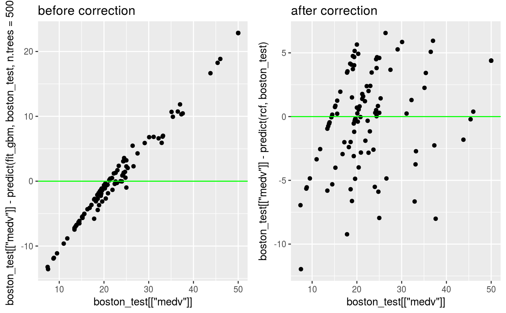

regression_corrector.RdRegress actual 'y' versus predicted 'y' in a regression fit using a flexible univariate regressor to reduce bias and possibly reduce other patterns in the residues.
regression_corrector(fit, data, actual, predictFun = stats::predict, method = "smooth.spline", ...)
| fit | A regression fit |
|---|---|
| data | Data to be used to predict the 'fit' |
| actual | Actual 'y' |
| predictFun | A predict function to be used with 'fit' and 'data' as first two unnamed arguments |
| method | Method for the univariate fit. These are implemented: smoothing spline using `stats::smooth.spline`, linear regression using `lm` and localized regression using `loess`. |
| ... | Arguments to the function fitting the univariate fit |
A object of class 'regressionCorrector' with these components:
method: method argument
reg: univariate regression fit
fit: fit argument
predictFun: predictFun argument
actual: actual argument
predicted: Predicted output of predicting fit on data
The returned object
#> Observations: 506 #> Variables: 14 #> $ crim <dbl> 0.00632, 0.02731, 0.02729, 0.03237, 0.06905, 0.02985, 0.08829… #> $ zn <dbl> 18.0, 0.0, 0.0, 0.0, 0.0, 0.0, 12.5, 12.5, 12.5, 12.5, 12.5, … #> $ indus <dbl> 2.31, 7.07, 7.07, 2.18, 2.18, 2.18, 7.87, 7.87, 7.87, 7.87, 7… #> $ chas <int> 0, 0, 0, 0, 0, 0, 0, 0, 0, 0, 0, 0, 0, 0, 0, 0, 0, 0, 0, 0, 0… #> $ nox <dbl> 0.538, 0.469, 0.469, 0.458, 0.458, 0.458, 0.524, 0.524, 0.524… #> $ rm <dbl> 6.575, 6.421, 7.185, 6.998, 7.147, 6.430, 6.012, 6.172, 5.631… #> $ age <dbl> 65.2, 78.9, 61.1, 45.8, 54.2, 58.7, 66.6, 96.1, 100.0, 85.9, … #> $ dis <dbl> 4.0900, 4.9671, 4.9671, 6.0622, 6.0622, 6.0622, 5.5605, 5.950… #> $ rad <int> 1, 2, 2, 3, 3, 3, 5, 5, 5, 5, 5, 5, 5, 4, 4, 4, 4, 4, 4, 4, 4… #> $ tax <dbl> 296, 242, 242, 222, 222, 222, 311, 311, 311, 311, 311, 311, 3… #> $ ptratio <dbl> 15.3, 17.8, 17.8, 18.7, 18.7, 18.7, 15.2, 15.2, 15.2, 15.2, 1… #> $ black <dbl> 396.90, 396.90, 392.83, 394.63, 396.90, 394.12, 395.60, 396.9… #> $ lstat <dbl> 4.98, 9.14, 4.03, 2.94, 5.33, 5.21, 12.43, 19.15, 29.93, 17.1… #> $ medv <dbl> 24.0, 21.6, 34.7, 33.4, 36.2, 28.7, 22.9, 27.1, 16.5, 18.9, 1…set.seed(2) train_sample <- sample.int(nrow(MASS::Boston), 400) boston_train <- MASS::Boston[train_sample, ] boston_test <- MASS::Boston[-train_sample, ] set.seed(500) fit_gbm <- gbm::gbm(medv ~., data = boston_train, n.trees = 500)#> Distribution not specified, assuming gaussian ...pred_gbm <- predict(fit_gbm, boston_train, n.trees = 500) plot(pred_gbm, MASS::Boston$medv[train_sample] - pred_gbm)rcf <- regression_corrector( fit_gbm , boston_train , boston_train[["medv"]] , function(model, data) stats::predict(model, data, n.trees = 500) ) rcf#>#>#>#> [1] 3.1991#> [1] 3.213737old <- ggplot2::qplot(boston_test[["medv"]] , boston_test[["medv"]] - predict(fit_gbm, boston_test, n.trees = 500) ) + ggplot2::geom_hline(yintercept = 0, color = "green") + ggplot2::ggtitle("before correction") new <- ggplot2::qplot(boston_test[["medv"]], boston_test[["medv"]] - predict(rcf, boston_test)) + ggplot2::geom_hline(yintercept = 0, color = "green") + ggplot2::ggtitle("after correction") cowplot::plot_grid(old, new, align = "h")rcf#>#>#>#>#>#>#>#>#>#> [1] 2.981213